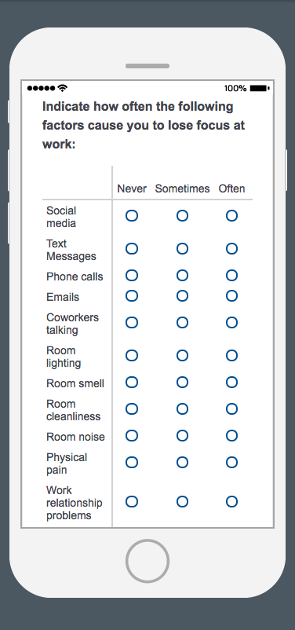
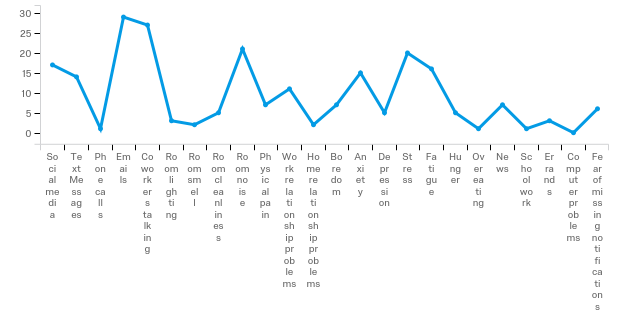
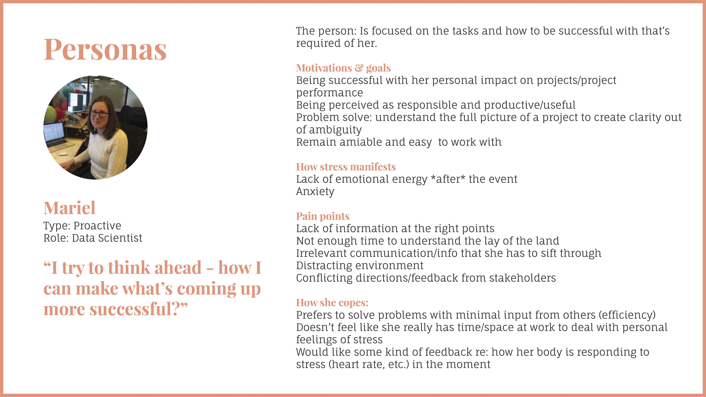
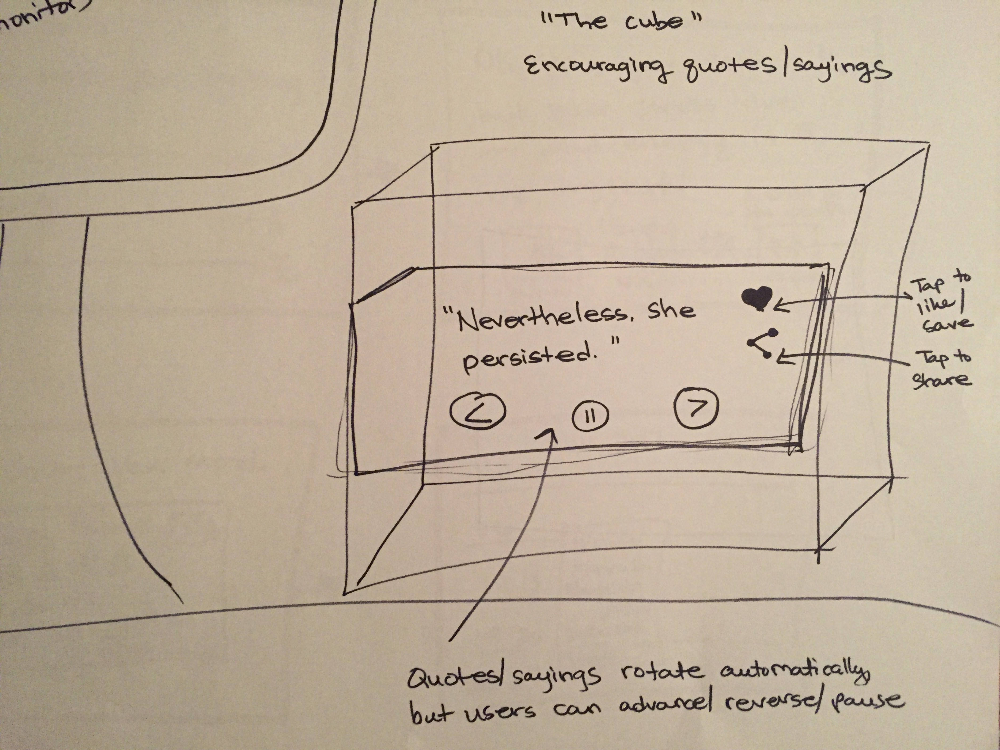
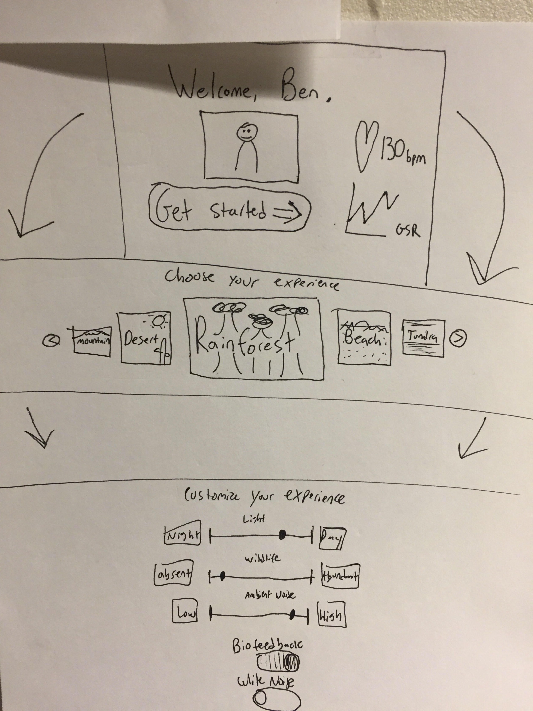
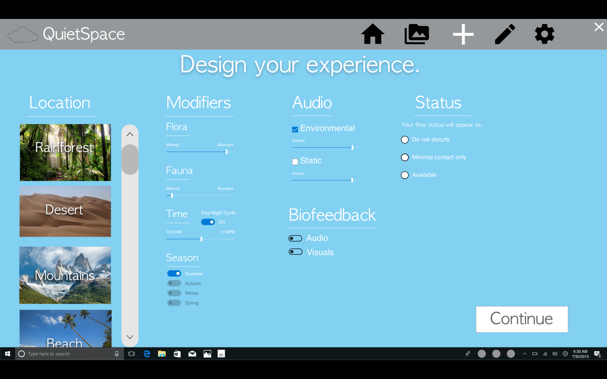
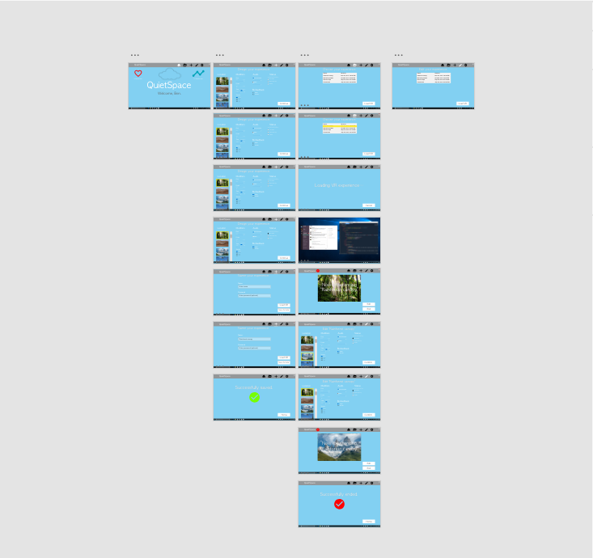
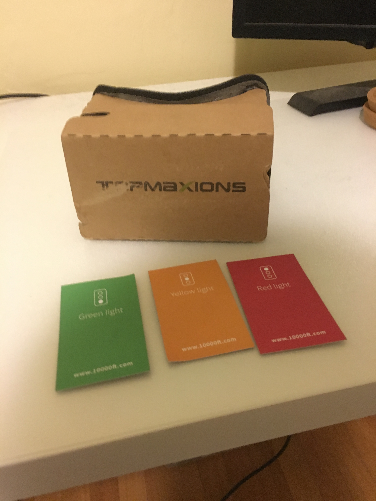
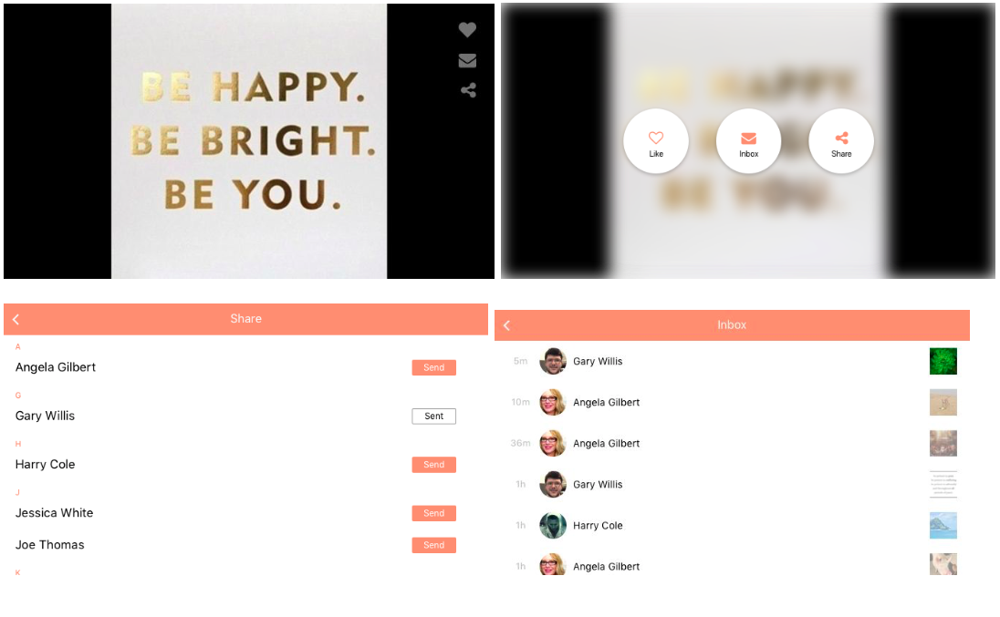
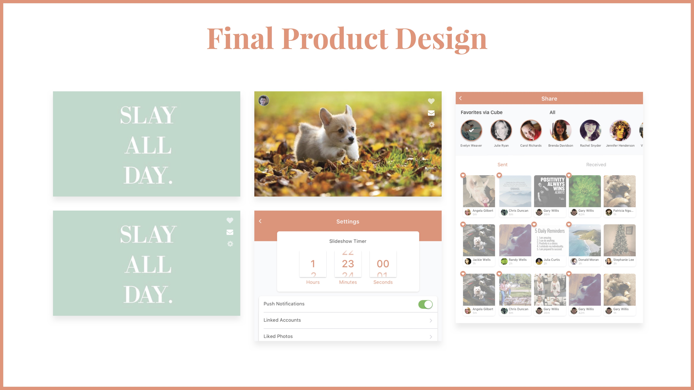

Back to all projects


Finding Our People
One of the constraints going into our project was access to users. This allowed us to narrow down on a group of users who we felt could greatly benefit from improving their focus: technology industry workers. Anecdotally, some of our group members also described significant focus lapses in themselves, and perceived significant focus lapses in their coworkers.
Our next step was to begin to understand why, how, and when our users lost focus at work. After turning to the scientific literature, my group and I brainstormed a list of possible factors that would cause people to lose focus at work, and then I attempted to organize them in a meaningful way. It was immediately clear that the issue was not so clear cut.
A brainstormed list of factors that contribute to focus loss
Survey No. 1
We decided that designing for every use case in which someone lost focus at work would be impossible. However, it was clear that some of these factors had to be more prominent than others. I decided to launch a survey on Qualtrics to gather statistics on the frequency of these factors, as well as to begin to understand other possible design constraints. This was also necessary due concerns over maintaining anonymity and privacy, as losing focus at work is a discouraged behavior. We deployed the survey to 65 users at Microsoft and AirBnb.
Example questions from the survey & data
Survey No. 2, Interviews, and Personas
It was clear that anxiety and stress were all factors that greatly contributed to focus loss. So, I designed a followup survey on Qualtrics to drill down on the factors that contributed to stress and anxiety, to gather demographic data, and to gauge receptiveness to various design solutions.
At the same time, we also decided to conduct semi-structured interviews with 5 users to understand the subjective experience of stress and anxiety. This was an important decision, as it gave us converging qualitative and quantitative data, which let us know we were on the right track.
Our most important findings were that:
Our data was very useful in crafting personas, which kept the users in our minds as we made future decisions.
One of our personas
Ideation and Parallel Design
Armed with some solid data, we moved forward into the ideation phase of our project. This was my favorite part, because I had not done substantial design work before, and we were encouraged to come up with innovative, far-out, and even crazy design solutions. We started of by sketching some concepts. Two dominant concepts included a desktop "cube" that displayed encouraging quotes through social sharing, and a virtual VR workplace which utilized biofeedback to create a stress reducing environment. The Cube promoted existing behaviors of connecting with friends to relieve stress, and the VR workplace solved the open-floor workplace environment problem. Since we liked both ideas and they both fit our design criteria, we decided to use parallel design to flesh out both concepts into prototypes.
Some sketches of the VR prototype concept
Prototyping for VR
I stepped up to design the VR prototype, and another one of my group-mates chose to design the Cube prototype. I had several features in mind that I wanted to include when building the wireframes and prototype. Users should be able to:
With these features in mind, I taught myself how to use Adobe XD and created a wireframe, which I called QuietSpace. This was a desktop application that would allow you to customize and upload your experience to a separate VR headset, and to display your disturb preferences to others. I used Photoshop to create 3d images of natural environments, loaded up rainforest sounds on Youtube to simulate the 'ambient biofeedback', and assembled a Google Cardboard fit with colored cards to indicate status.
A low fidelity prototype for the VR concept
A low fidelity prototype for the Cube concept
Cognitive Walkthrough & Deliberation
We then asked classmates to evaluate both prototypes using the cognitive walkthrough method. We received positive feedback on both prototypes, however we had to make the difficult decision to only move forward with one. Due to time constraints, we all agreed that it would be easier to validate the Cube prototype, as the VR prototype had a significant setup process.
Even though I agreed with the group decision, I had worked hard on my prototype and felt very strongly that it was the right design. Naturally, I felt frustrated. However, through this experience, I understood the importance of not marrying yourself to a design, and the practical considerations that time constraints can place on a project.
Once the prototype had been selected, we recruited 5 participants and had them complete 4 tasks while thinking out loud. Participants were encouraged to share their mental models around the tasks. These tasks included:
After conducting these usability tests, we learned that:
From the feedback gathered, we addressed key pain points from our participants’ experiences. First, we created a settings menu which allowed our users to have more control over the Cube. Second, we merged the share and inbox icons.
After incorporating findings from our user tests, we ended up with a final prototype.
From this project, I learned about how to perform the iterative User-Centered Design process and practiced its plethora of methods. I saw the confidence that convergent qualitative and quantitative data brings, and how to overcome design defensiveness. I got to work with people from a bunch of different disciplines. And, I got to create something that addressed the real needs and wants of a group of users.
The final product design, and the prototype in action
* Kevin was the visual designer on our project and designed some of the above slides. His portfolio can be viewed at kevinchang.design.